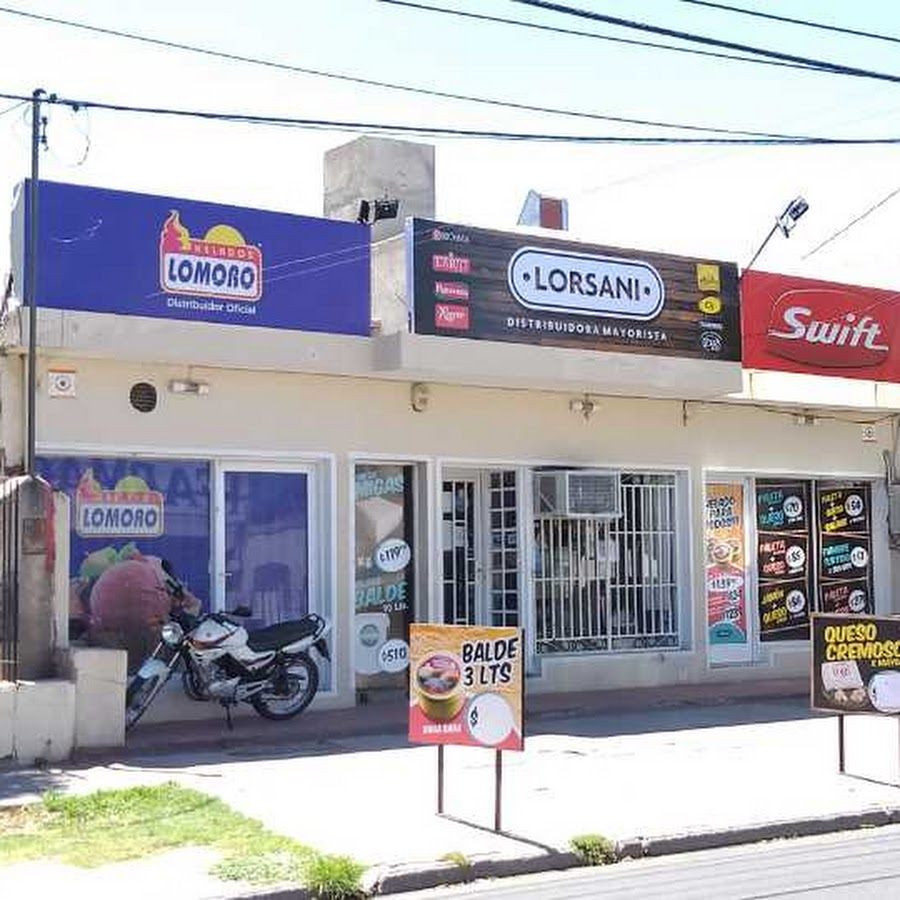

DISTRIBUIDORA LORSANI / BABOONS
Implementación
Organizá las tareas, la capacitación y el seguimiento de la implementación de Baboons y BOND en Lorsani.
Salida en vivo prevista

Los registros se guardan en este navegador. Descargá un respaldo para moverlos a otro equipo.
Etapas de implementación
Editá el inicio y el fin de cada etapa.
Plan de implementación
Antes de salir en vivo, el objetivo es validar el 100% de los circuitos críticos. Diciembre cubre la estabilización y el plan trimestral completa la adopción.
Operadores
Accesos, capacitación y práctica por rol y sucursal.
Biblioteca de videos
Una tarea por video. Agregá el enlace del material cuando esté disponible.
Bitácora
Registrá qué se hizo, qué se comprobó y qué necesita respuesta.
Informes de avance
Generá el informe para cada destinatario con los datos registrados.